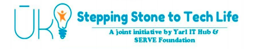

It is a full scholarship based Accelator program for Coding in Jaffna, SriLanka targetting students who has completed advanced level examination and don't have access to university education or any other form of bocational education. It is aim to provide the necessary training to enter Computer Software industry or to start an IT startup. this is joined initiative by Yaarl IT Hub and SERVE Foundation. Yarl IT Hub has been functioning for the last five years as a not for profit social enterprise focusing on technology entrepreneourship in northern Sri Lanka and SERVE Foundation is a four year old foundation focusing on using technology to uplift secondary education standard in rural school in northern Sri Lanka.
This Coding Accelerator Program is an intenship training on full-stack development with server-side Node-js and Modern Client-side front-end library and framework.Through out this intensive course the student will study professional Software Development techniques and practices as he/she Advances his/her JavaScript
Our vision is to be a leading center of excellence in teaching learning research and scholorship.